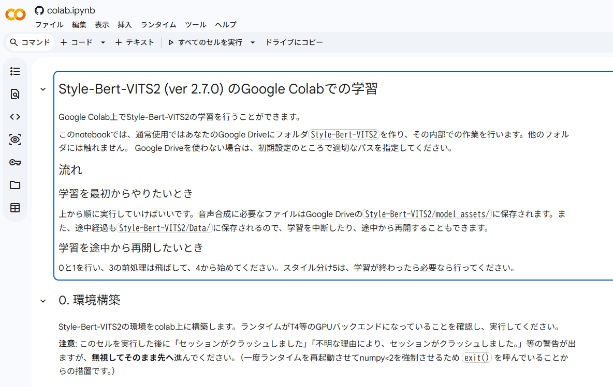

Google ColabでAI音声を作成し、Androidアプリ等で利用可能なPTL形式（PyTorch Mobile）へ変換するまでの流れを解説します。

画面左上のメニューから「ファイル」→「ドライブにコピーを保存」をクリック。コピーされたタブで作業を進めます。※これをしないと設定が保存されません！
「0. 環境構築」と「1. 初期設定」を実行し、Google ドライブをマウント（連携）させます。
ドライブの Style-Bert-VITS2/inputs/ に音声を入れたら、前処理を実行して学習の準備を整えます。
学習セルを実行します。完了すると、高精度な音声合成のための .safetensors ファイルが出力されます。
学習したモデルをAndroidアプリ等で軽量に動かすため、PTL形式に変換します。
ノートブックの変換スクリプトを使用して、モバイル向けに最適化されたファイルを書き出しましょう。これでアプリへの組み込みが可能になります！
※書き出されたファイルは model_assets フォルダ等から確認し、大切に保存してください。